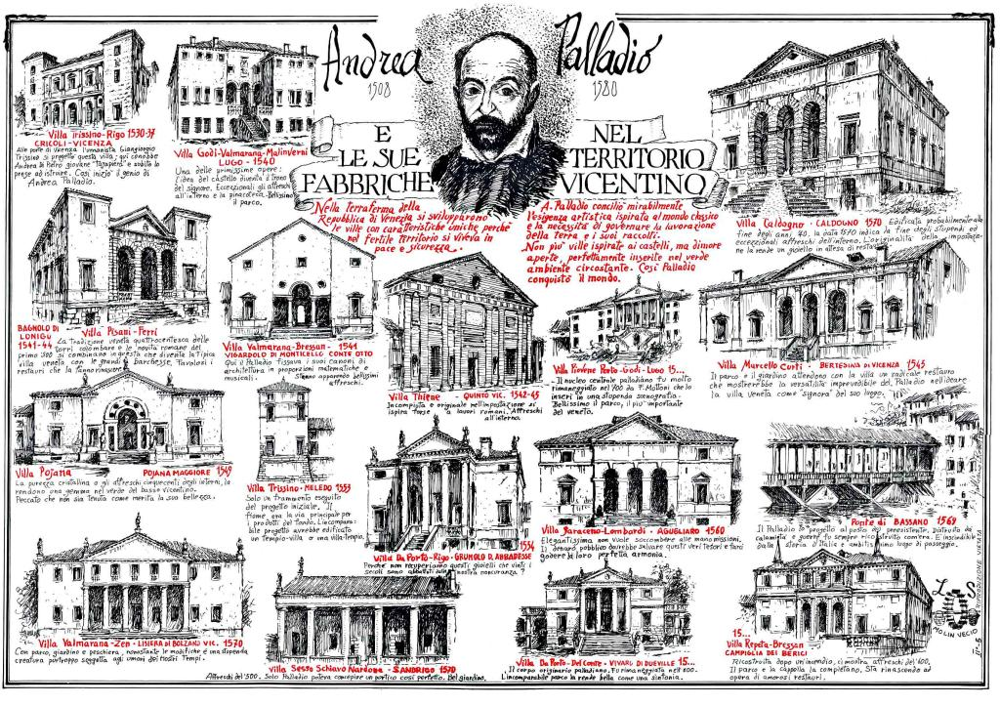

Villa Emo is a patrician villa in the Veneto, northern Italy, near the village of Fanzolo di Vedelago. It was designed by Andrea Palladio in 1559 for the Emo family of Venice and remained in the hands of the Emo family until it was sold in 2004. Since 1996, it has been conserved as part of the World Heritage Site "City of Vicenza and the Palladian Villas of the Veneto".
The building of Villa Emo was the culmination of a long-lasting project of the patrician Emo family of the Republic of Venice to develop its estates at Fanzolo. In 1509, which saw the defeat of Venice in the War of the League of Cambrai, the estate on which the villa was to be built was bought by Leonardo di Giovanni Emo from the Barbarigo family. The landscape of Fanzolo has a continuous history since Roman times and it has been suggested that the layout of the villa reflects the straight lines of the Roman roads.
The Emo family's central interest was at first in the cultivation of their newly-acquired land. Not until two generations had passed did Leonardo di Alvise Emo commission Palladio to build a new villa in Fanzolo. We unfortunately do not have any firm dates for the commencement of the new building: the years 1555 or 1558 have been proposed. The date of completion is put at 1565; a document which attests to the marriage of Leonardo di Alvise with Cornelia Grimani has come down to us from that year
